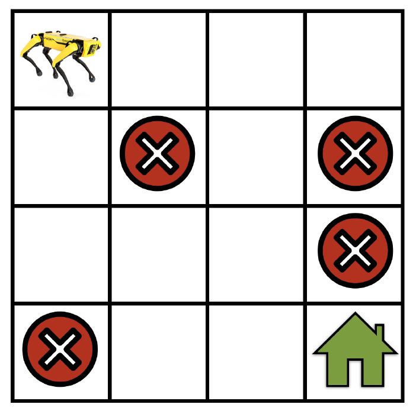

Markov Decision Process#
Note
In this section, we will discuss how to formulate reinforcement learning problems using Markov decision processes (MDPs) and describe various components of MDPs in detail.
Definition of an MDP#
A Markov decision process (MDP) (Bellman, 1957) is a model for how the state of a system evolves as different actions are applied to the system. A few different quantities come together to form an MDP.
Let \(\mathcal{S}\) be the set of states in the MDP. As a concrete example, for a robot that is navigating a gridworld. In this case, \(\mathcal{S}\) corresponds to the set of locations that the robot can be at any given timestep.
Let \(\mathcal{A}\) be the set of actions that the robot can take at each state, e.g., “go forward”, “turn right”, “turn left”, “stay at the same location”, etc. Actions can change the current state of the robot to some other state within the set \(\mathcal{S}\).
If the robot takes an action “go forward”, there might be a big probability that it actually goes forward, a small probability that it stays at the current state, another small probability that it turns left, etc. Mathematically, this amounts to defining a “transition probability” \(p(s'|s,a)\) of reaching a state \(s'\) given that the robot was at state \(s\) and took an action \(a\). It is a probability distribution and we therefore have \(\sum_{s'\in\mathcal{S}}p(s'|s,a)=1\) for all \(s\in\mathcal{S}\) and \(a\in\mathcal{A}\), i.e., the robot has to go to some state if it takes an action.
We now construct a notion of which actions are useful and which ones are not using the concept of a “reward” \(r:\mathcal{S}\times\mathcal{A}\to\mathbb{R}\). We say that the robot gets a reward \(r(s,a)\) if the robot takes an action \(a\) at state \(s\). If the reward \(r(s,a)\) is large, this indicates that taking the action \(a\) at state \(s\) is more useful to achieving the goal of the robot, i.e., going to the green house. If the reward \(r(s,a)\) is small, then action \(a\) is less useful to achieving this goal.
The different components above together form a Markov decision process (MDP)

The dynamics of an MDP proceeds as follows: We start in some state \(s_{0}\), and get to choose some action \(a_{0}\in\mathcal{A}\) to take in the MDP. As a result of our choice, the state of the MDP randomly transitions to some successor state \(s_{1}\), drawn according to \(s_{1}\sim p(\cdot|s_{0},a_{0})\), and get a reward \(r_{1}=r(s_{0},a_{0})\). Then, we get to pick another action \(a_{1}\). As a result of this action, the state transitions again, now to some \(s_{2}\sim p(\cdot|s_{1},a_{1})\), and get a reward \(r_{2}=r(s_{1},a_{1})\). We then pick \(a_{2}\), and so on… . Result in a trajectory as follows:
The Markov property indicates that the next state or reward depends merely on the current state and action and is independent of the previous ones. It may seem that Markovian nature of a system is a restrictive assumption, but it is not so. Markov Decision Processes are still capable of modeling a very large class of real systems.

Polices#
A policy is a rule used by an agent to decide what actions to take. It can be deterministic, in which case it is usually denoted by \(\mu\):
or it may be stochastic, in which case it is usually denoted by \(\pi\):
Because the policy is essentially the agent’s brain, it’s not uncommon to substitute the word “policy” for “agent”, eg saying “The policy is trying to maximize reward.”
In many cases, we deal with parameterized policies: policies whose outputs are computable functions that depend on a set of parameters (eg the weights and biases of a neural network) which we can adjust to change the behavior via some optimization algorithm. We often denote the parameters of such a policy by \(\theta\), and then write this as a subscript on the policy symbol to highlight the connection:
Return and Discount Factor#
At each time step \(t\) the agent is at a state \(s_{t}\) and takes an action \(a_{t}\) which results in a reward \(r_{t+1}=r(s_{t},a_{t})\). The return of a trajectory is the total reward obtained by the robot along such a trajectory
The goal in reinforcement learning is to find a trajectory that has the largest return.
Another kind of return is the discounted return, which is the sum of all rewards ever obtained by the agent, but discounted by how far off in the future they’re obtained. This formulation of reward includes a discount factor \(\gamma \in (0,1)\):
Why would we ever want a discount factor, though? Don’t we just want to get all rewards? We do, but the discount factor is both intuitively appealing and mathematically convenient. On an intuitive level: cash now is better than cash later. Mathematically: an infinite-horizon sum of rewards may not converge to a finite value, and is hard to deal with in equations. But with a discount factor and under reasonable conditions, the infinite sum converges.
We’ll notate all of these cases with \(R_{\tau}\), and it will either be clear from context which case we mean, or it won’t matter.